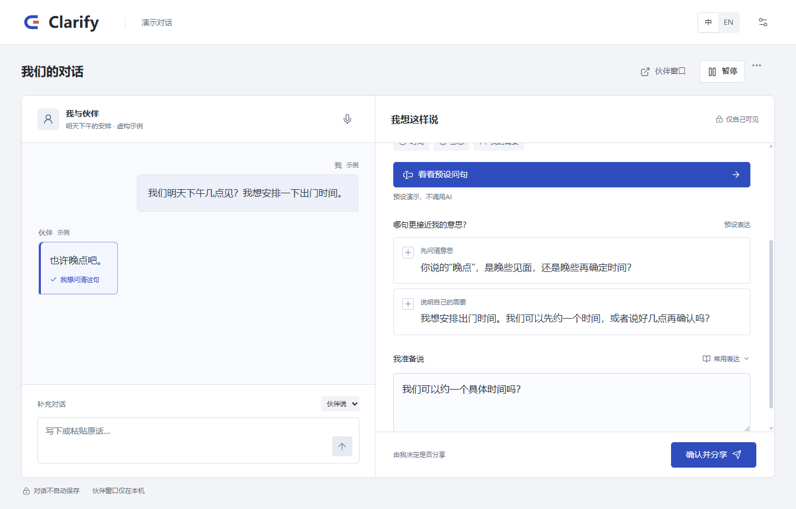
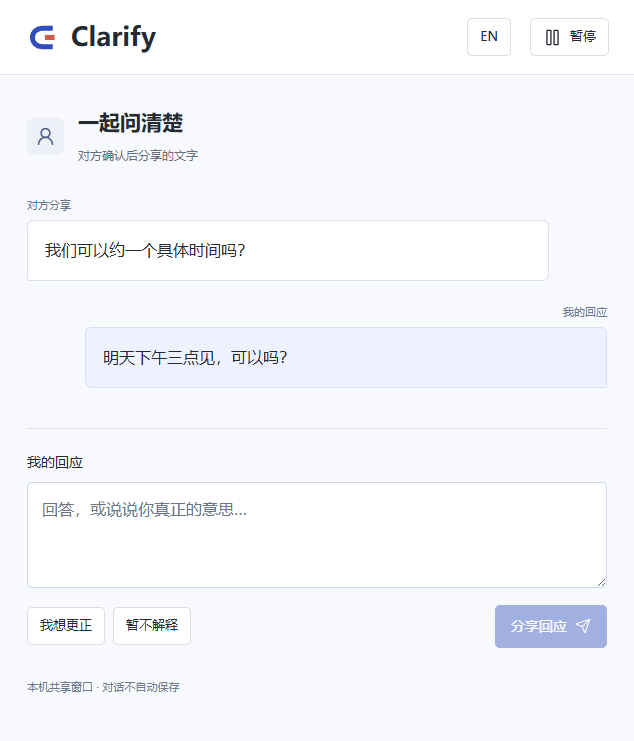
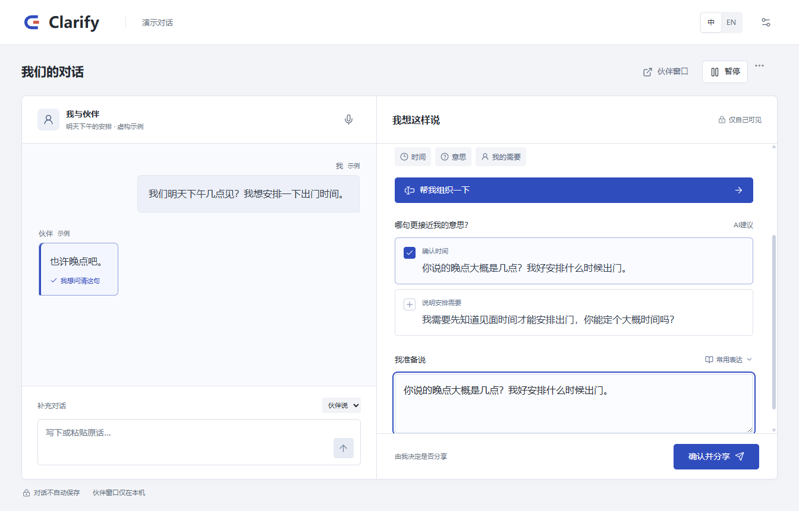
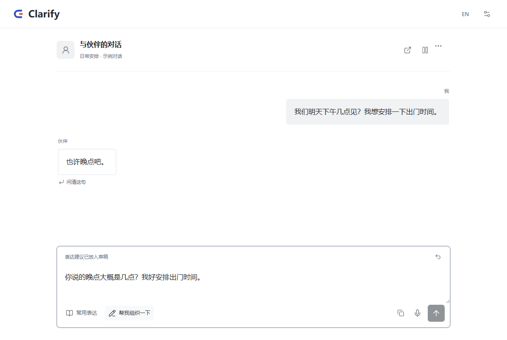

Start from a goal
You say what you actually need to find out, not the sentence you were about to send. The goal is yours alone; it never appears in the conversation.
Research prototype · 2026
Some questions are easy to think and hard to ask. Clarify gives you a private room to shape the question first — and gives the other person a way to answer without being cornered.
What it changes
Most tools optimise what you say. Clarify works on the step before: deciding whether the question is fair, and letting the other side disagree with the question itself.

A clarification request is not a message. It is a small agreement about what is being asked — and whether it should be asked at all.
You say what you actually need to find out, not the sentence you were about to send. The goal is yours alone; it never appears in the conversation.
You draft the wording, compare a few options, and keep editing until it sounds like a person asking rather than an accusation.
Only when you confirm does the request appear to the other person. Before that moment, nothing is sent and nothing is stored.

Most “help me say this better” tools treat the listener as a recipient. Here the listener gets their own agency:
Answer the question, correct the premise it was built on, pause the exchange, or decline — each is a first-class action, not an awkward silence.
That asymmetry is the design claim: a question can be well-meaning and still be unfair. The interface should make room for saying so.

Connect any OpenAI-compatible endpoint with your own API key and Clarify will propose a few phrasings for the goal you stated.
The model only ever sees your draft and your goal — never the other person's messages. You still decide what gets sent, and the final text stays editable.
With no key configured, the prototype runs entirely on labelled example sentences, so the interaction remains demonstrable offline.

Clarify is an Electron application with a React interface, a typed main process boundary, and a local-only speech pipeline.
Portable Windows build, 235 MB zipped. The speech model is optional and downloaded separately, so the download stays small unless you want voice.